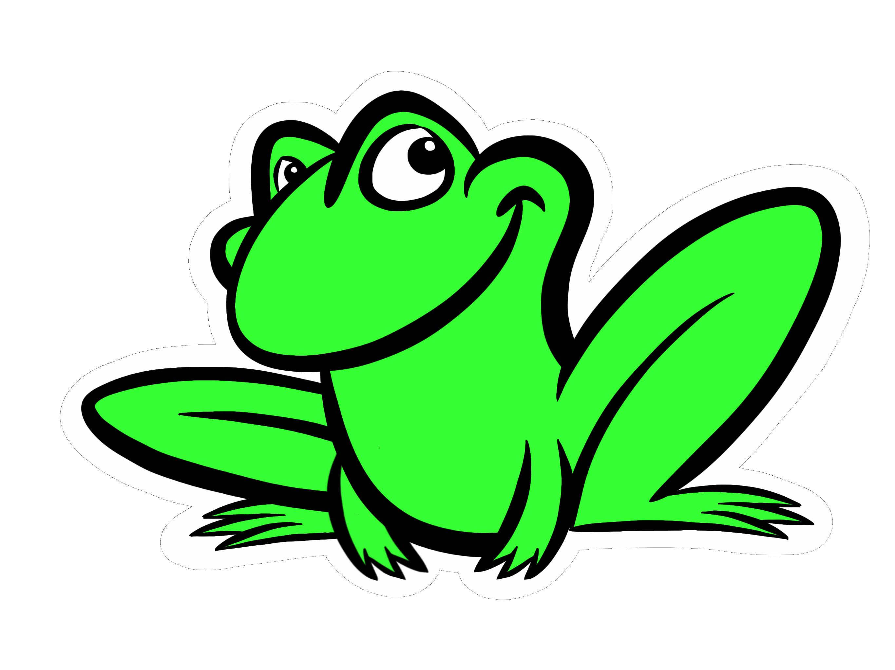
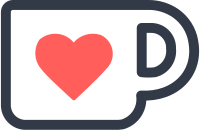

Friends of Good Software
Save the dates
- Lean Coffee: Thursday 8 December 2022 4pm-5:30pm CET
- Unconference: Saturday 11 March 2023 10am CET
- Lean Coffee: TBD
- Unconference: Saturday 9 September 2023 10am CEST
What is FroGS Conf?

Friends of Good Software Conference (FroGS Conf) is an annual online unconference and quarterly lean coffee. It's a participant-driven meeting for and by people with an interest in software and quality. The organizers provide a basic structure; the rest is up to all of us, the participants.
We've created a video explaining our unconference. You can find some tips & tricks for facilitating an unconference session on our Event Format page. Here's an explanation of the lean coffee format.
When is it?
- Lean Coffee: Thursday 8 December 2022 4pm-5:30pm CET
- Unconference: Saturday 11 March 2023 10am CET
- Lean Coffee: TBD
- Unconference: Saturday 9 September 2023 10am CEST
We'll update our Schedule page when we get closer to the events.
If you want to know how long we've been doing this and who helped organize in the past, visit our Previous editions page.
How can I register?
If you wish to attend, please go to the Registration page. Attendance is free.
How can I support FroGS Conf?
By participating in one of our events! Or even better by bringing a topic to an event.
 We're also accepting donations at Ko-fi. The money will go towards the cost of mailing out FroGS stickers and supporting any future in-person gatherings.
Which tools do you use?
We've been using Welo for video conferencing. It provides a different atmosphere than many video conferencing tools. You can see which participants are in different rooms and move around to join them. We're grateful to Welo for allowing us to barter for the use of their tool in exchange for bug reports.
For online whiteboarding, lean coffee topic picking, and unconference schedule planning, we've used a paid instance of Miro.
For scheduling across time zones, we use Local Schedule built by our our steadfast supporter and originator of the FroGS name, Markus Tacker.
Code of Conduct: the short version
We want FroGS conf to be a welcoming and safe space, where everyone can participate.
The short version: Be a respectful human person. Let other people be themselves. Do not ruin anyone else’s experience. Keep an open mind. If you see or experience something unacceptable, respectfully ask for it to stop. The FroGS conf organizers will support you.
Read the full version on our Code of Conduct page.